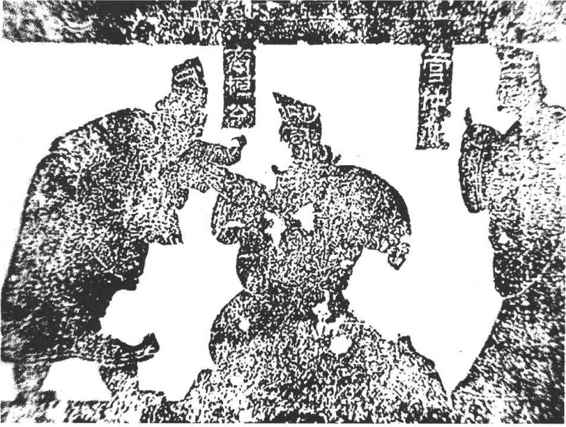
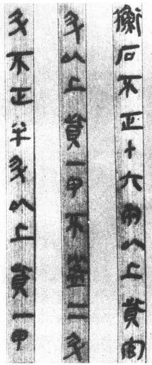
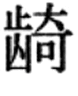

春秋战国时期是中国奴隶制度瓦解、封建制度确立的大变革时代。封建地主阶级作为一种新兴的政治力量，在春秋时期即已异军突起。他们在政治上致力于改革旧的奴隶制的选举制度，以“任人唯贤，因功受禄”的选举制度取代陈旧的世卿世禄制，希望通过新制度不拘一格选拔人才，壮大封建地主阶级的力量。所以这时期一些政治开明的诸侯国国君，为了达到富国强兵的目的，往往能够不计私仇，大胆任用某些地位低下和才干出众的人。例如齐桓公能够重用他的政治仇敌而又富有治国之才的管仲为相，并且“选其官之贤者而复用之”、“匹夫有善，可得而举”，［3］终于称霸一时。（图6—1）秦穆公虚心招揽贤才，以五张黑羊皮赎回当过陪嫁奴隶的百里奚，用为大夫，并且重用从戎人那里投奔来的由余，使秦国力量强大起来。吴王阖闾任用楚国来的伍子胥为相，以齐国的军事家孙武为军队统帅，改革内政，终于攻破了楚国的郢都，取得胜利。以后越王勾践又任用文种、范蠡治理国政，并且“折节下贤人，厚遇宾客”［4］，通过卧薪尝胆，锐意进取，最后灭了吴国。上述这些事例都说明，在新的历史条件下，选举制度也发生了新的变化。

图6-1 齐桓公与管仲画像砖
春秋战国时期，政治上的大动荡、社会的大变革促使学术思想领域异常活跃，造成了百家争鸣的局面。这时期，各家学派从不同角度阐发了自己的人才观和选举思想，为选举制度的改革提供了各种理论依据。
儒家 尽管孔子对西周以前的政治制度持赞赏态度，但是在选人任官方面，他提出了“举贤才”的主张，对旧的世卿世禄制提出了许多批评，这是有积极意义的。孔子的学生仲弓做了季氏的宰（总管），孔子向他强调，应该“举贤才”，也就是注重提拔优秀人才。孔子慨叹人才难得，说“才难，不其然乎？”［5］孔子认为选拔人才的标准是“志于道、据于德、依于仁、游于艺”［6］，就是要求人才应该具备政治理想和抱负，以德的准则行事，依靠仁爱感化别人，熟练地掌握礼、乐、射、御、书、数等六艺。孔子主张从那些文化修养较高的人中挑选人才，所以说：“学而优则仕。”［7］他还说：“先进于礼乐，野人也；后进于礼乐，君子也。如用之，则吾从先进。”［8］意思是贤才应该先学习礼乐，后做官。这里的“野人”是指无爵位的平民；“君子”是指有爵禄的人。孔子表示不赞成那些贵族们不学习就做官。不难看出，这些都是孔子对旧的世卿世禄制度的批判。
墨家 墨子明确提出了尚贤的主张。在《墨子·尚贤》中，他强调尚贤可以使国家治理得很好，而不尚贤是国政失败的根本原因。要做到尚贤，就应该“不党父兄，不偏富贵，不嬖颜色。贤者举而上之，富而贵之，以为官长；不肖者抑而废之，贫而贱之，以为徒役”［9］。从而实现“官无常贵，而民无终贱。有能则举之，无能则下之”［10］的目标，在这里，墨子的举贤才是不论地位的贵贱与血缘的亲疏的，只要是有才干，就应当被推举出来，这与仍然强调“尊尊、亲亲”、坚持“君子与小人”、“上智与下愚”等级分明的孔子相比较，又大大前进了一步。可见，墨子对于以血缘宗法关系为基础的世卿世禄制度的否定，比孔子更为彻底。
道家 老庄的道家思想对社会的不合理现象进行了尖锐的揭露和批判，但是解决的办法却是消极的、无所作为的。他们主张人们最好是“无知无欲”和“不争不战”，这样就可以免去一切矛盾，因此政治上强调要“无为而治”。老子认为：“民之难治，以其智多。故以智治国，国之贼；不以智治国，国之福。”［11］这不仅是反对举贤才，而且反对整个人类的文明进步，鼓吹越是愚昧越好。
法家 法家是春秋战国时期新兴地主阶级在政治上、思想上的激进派，他们主张彻底废除旧制度，提出以法、术、势治国的方针。在举贤才问题上，他们虽然主张“量能授官，因功赐爵”，但是这要根据法的规定来进行。法家同儒、墨宣扬的尚贤不同，认为国家可以无贤，但不可无君。他们说：“立君而尊贤，是贤与君争，其乱甚于无君。”［12］就是说如果有才干的人受到重用并取得成绩，就会降低国君的威望，对君主的独裁统治产生威胁。法家片面夸大了法律的作用，以为庸才也可以运用法律治理国家。在选人任官问题上，法家主张利用人们“趋利避害”的心理，以“利”为钓饵，通过刑赏之法使之为我所用。所以法家的“量能授官”，着眼点不在于发挥贤人的才干，而是以此使人们慑服于君主的专制统治。法家在“术”的理论中，对于君主应该用怎样的策略驾驭人才、控制臣下，做了系统的阐述。尽管法家在理论上对尚贤提出了相反的观点，而在当时像秦国那样贯彻法家思想比较坚决、彻底的国家，统治者还是很注重求贤的。
春秋战国时期是中国的人才思想的大发展时期，除了上述几家学派的观点外，《管子》、《晏子》、《孟子》、《荀子》、《吕氏春秋》等著作中，对于人才思想也都有所阐发，对后世具有一定影响。
战国时期，新兴的封建地主阶级根据法家学说，在各国相继实行了变法，其中对于选举制度也进行了各种改革，以打破奴隶主贵族对权力的垄断。例如魏文侯任用李悝实行变法，以“食有劳而禄有功，使有能而赏必行、罚必当”［13］的政策，打破了旧贵族对禄位的世袭。赵烈侯以公仲连为相国，实行“选练举贤，任官使能”［14］的方针，使赵国力量增强。韩昭侯任用申不害为相，推行“见功而与赏，因能而授官”［15］的政策，也使韩国强大一时。楚悼王任用吴起，规定对贵族子孙“三世而收爵禄”［16］，并且“捐不急之官，废公族疏远者”［17］，于是楚国名声大振。
在秦国，商鞅在秦孝公的支持下，实行的变法最为彻底，从而为秦统一中国奠定了基础。商鞅在变法中取消了宗室贵族的许多特权，规定“宗室非有军功，论不得为属籍”［18］，从而否定了任人唯亲的旧制度。他还奖励耕战，实行军功爵制。《商君书·赏刑》说：“利禄官爵专出于兵，无有异施也。”书中记有十余种爵名，后来发展为二十等爵。所谓军功爵制，是按照作战功劳的大小授给爵位，一定的爵位代表相应的政治地位和经济特权。《韩非子·定法》说：“商君之法曰：斩一首者爵一级，欲为官者为五十石之官。斩二首者爵二级，欲为官者为百石之官。官爵之迁与斩首之功相称也。”这表明，战争中杀敌多少，直接关系着爵位、待遇的升迁。1975年在湖北省云梦县睡虎地秦墓中出土的大批记载秦代法律的竹简，充分证实了秦时以军功赐爵的可靠性。（图6—2）

图6-2 秦律竹简，湖北云梦睡虎地出土
封建统治者虽然实行以军功赐爵的政策，但是出于严格的社会等级限制，他们不愿意一般下层吏民通过军功获爵，轻易地踏入上层统治者的行列。因此又特别规定，普通吏民只能获得低等爵位。据《汉书·高帝纪》记载，秦汉时有高爵（官爵）、低爵（民爵）之分，说“七大夫、公乘以上皆高爵也”。这是说第八级公乘以下各爵为民爵。一般吏民以军功得爵不能超过公乘这一级。若有超过的，必须把超出的级数转让给自己的儿子或兄弟。不过，尽管封建统治者做了这种限制，但是无论是高爵还是低爵，都会在政治上、经济上享有许多特权。普通吏民可以依靠军功爵制度步入新兴地主行列，使新兴地主阶级的力量得到壮大。
战国时期，养士已经成为一种社会风尚。所谓养士，就是国君和贵族们平时召集一批有学问、有才干的“士”在身旁，供养他们生活，请他们对朝廷的大政方针提出建议，或者随时从中选取人员任官，也可以授予他们某些临时性的政治使命。一般的说，这些士都是代表封建地主阶级利益的下层知识分子，但其中也有少数下层劳动者，但往往须是有一技之长的人。这时的士，不受国家、宗族、经济地位的限制，只要有才干、善于言辩，无论走到哪国，都可能受到礼遇，甚至被委以重任。由于这些士经常奔走于各国，到处兜售自己的政治主张和策划谋略、权术，所以被称为“游说之士”，他们是当时政治舞台上一支最活跃的力量。
这时期的东方六国争相养士，以期壮大自己的力量。例如齐国在稷门外（临淄城西门附近）建造了宽大的公馆，招聘了上千的文人学士在这里讲学论道，被称为稷下学士。著名的淳于髡、尹文、慎到、荀子、邹衍等都曾在稷下讲学，他们有的人在政治上对齐国颇有影响。在燕国，燕昭王筑造黄金台，置黄金于台上、礼聘天下贤人智士。《史记·燕召公世家》记载说，燕昭王请郭隗向朝廷推荐贤士。郭隗说：“如果大王真心想招聘贤能之人，就请从我开始吧！那些才能高超的人见我这个平庸之辈都被您重用了，他们一定会从千里之外来投奔您。”燕昭王听从了郭隗的建议，果然一些名士如乐毅、邹衍、剧辛等都来到燕国。在这些名士的辅助下，二十余年后，燕国真的强盛起来，乃至起兵伐齐，攻破了齐国的都城临淄。
汉代学者贾谊在《过秦论》一文中提到战国时的“四君”说：“齐有孟尝、赵有平原、楚有春申、魏有信陵，此四君者，皆明智而忠信，宽厚而爱人，尊贤而重士。”就是指他们当时都养士数千人，礼贤下士，争取民心。后来苏秦、张仪等游说之士鼓吹“合纵”、“连横”，形成了错综纷争的局面。苏秦联络山东六国以抗秦，一人佩六国相印，更是显赫一时！在各国统治者普遍重视游说之士的社会条件下，当时的政治舞台上演出了许许多多极为生动的“戏剧”，诸如窃符救赵、鸡鸣狗盗、狡兔三窟、完璧归赵、负荆请罪、千金市骨、荆轲刺秦王、毛遂自荐、悬梁刺股等等著名的历史故事，至今仍然脍炙人口，广为流传。
秦国地处西北，其旧的宗法制度不似中原地区那样严格，而它实行法治又比其他各国严厉、坚决，因此在重用游士、充分发挥游士的积极作用方面也比较开放。应该说，这是秦国能够最终统一六国的重要原因。宋朝史学家洪迈在《容斋随笔》一书中，就已经揭示了这一特点，他说：
七国虎争天下，莫不招致四方游士。然六国所用相，皆其宗族及国人，如齐之田忌、田婴、田文，韩之公仲、公叔，赵之奉阳、平原君，魏王至以太子为相。独秦不然，其始与之谋国以开霸业者，卫人公孙鞅（即商鞅）也。其他若楼缓赵人，张仪、魏冉、范雎皆魏人，蔡泽燕人，吕不韦韩人，李斯楚人。皆委国而听之不疑，卒之所以兼天下者，诸人之力也。
在秦国，外来的游说之士入仕做官有两种情况：一种是受到秦王赏识后，直接授以高官，主持国政。如商鞅就是由秦孝公授以左庶长之爵，得以主持变法的。第二种是先拜为客卿，以后再升迁为相。客卿不算是正式官职，只是秦王的高级顾问，可以参与商讨国家大政。由客卿拜为正卿或相，必须统兵参加征战，立有军功方能升迁。例如张仪、蔡泽、错、通等人都是如此。这就是秦的客卿制度。除此以外，秦国还有大量的文臣武将是外来的士，如尉缭、王翦、蒙恬、桓、李信、王离等人，他们都受到秦王的重用，为秦统一天下做出了突出的贡献。
战国时期的军功爵制和养士等选举办法，是适应这一时期各国封建政权割据图强的需要而产生的，不仅有力地突破了奴隶社会世卿世禄制度的束缚，而且对于地主阶级从下层社会发现人才、选拔人才起到了积极促进作用，这自然有利于封建统治者最终建立起一个统一的、中央集权的封建帝国。